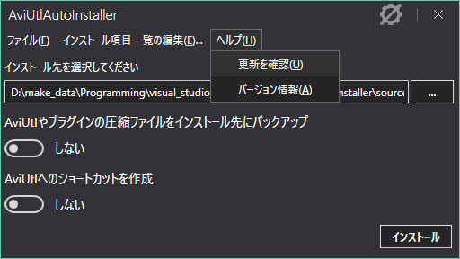
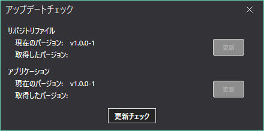
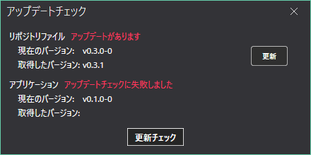

AviUtlAutoInstaller関連の更新
プリインストールリポジトリとAviUtlAutoInstallerの更新を行う方法を説明します。
アップデートのチェックを行う
- ヘルプ -> 更新の確認をクリックする

- 更新チェックボタンをクリックする

- 更新があると以下のような表示になる

更新があれば、"アップデートがあります"と表示される
更新チェックに失敗した場合は、"アップデートチェックに失敗しました"と表示される
更新がなければ、以下のように、取得したバージョンのみ表示される
プリインストールリポジトリの更新
- アップデートのチェックを行った後、更新ボタンをクリックする
更新完了後、プリインストールリポジトリを再読み込みするので、そのまま作業を続行することができます
AviUtlAutoInstallerの更新
- 最新のAviUtlAutoInstallerをダウンロードする
- AviUtlAutoInstallerを終了する
- アップデート手順に従ってAviUtlAutoInstallerを更新する
アップデート完了後、タイミングによってはプリインストールリポジトリが古い場合があるので、更新の確認を行うことをおすすめします。